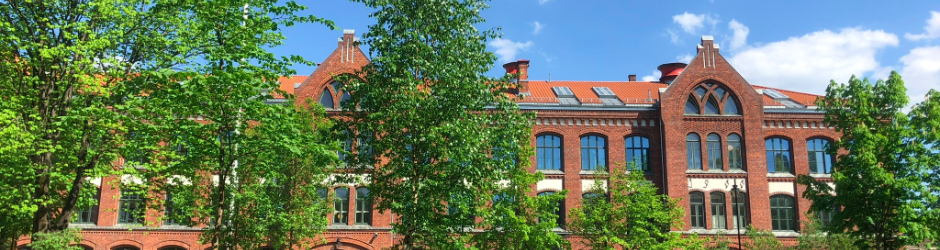

Foss VGS er en sentrumsnær skole som ligger midt på Grünerløkka langs Akerselva. Skolen ligger i en 100 år gammel murbygning med 3 etasjer som man kan nå enten med heis eller ved å gå opp de grønne marmortrappene. Foss er en av to videregående skoler i Oslo som tilbyr studieretningen Musikk, Dans og Drama og har mange øvingsfasiliteter for ulike instrumenter spredt rundt i 3. etasje og i kjelleren.